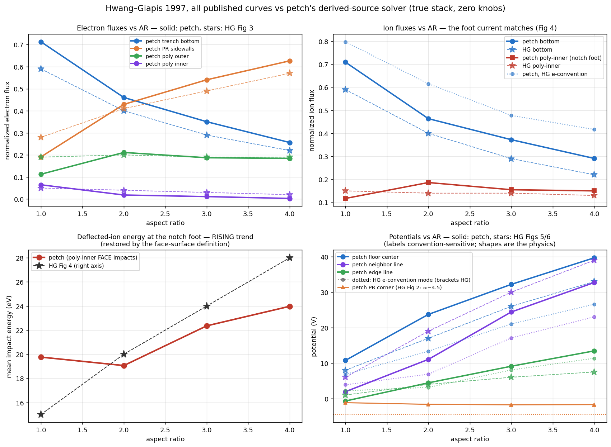
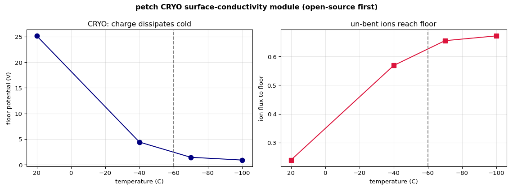

Feature-scale surface charging — first principles, zero knobs
The charging engine was rebuilt from derivations and proofs: a sheath source backed by an exact theorem, dynamics with no tuning knobs, and a 30-year-old benchmark that ends up not just matched but corrected.
The leading open framework (ViennaPS) has no charging model at all; the reference charging code (Kushner MCFPM) is closed-source, CPU, non-differentiable. petch's engine is open, geometry-agnostic, and — after this campaign — derivation-clean: the particle source is proven, the dynamics carry no fitted constants, and every claim below has a gate script in the repo.
The physics, in one paragraph
Directional ions reach trench bottoms; isotropic electrons get shadowed by the walls. On an insulator, charge cannot flow away, so each surface floats until the ion and electron currents balance. The floor charges positive and repels the low-energy part of the bimodal ion energy distribution; the rejected ions are deflected into the sidewall feet (the notching driver); the line bordering the open area stays low because grazing electrons feed its outer wall. All of this emerges from tracing derived particle distributions through the self-consistent field.
The derived source (proven, not parameterized)
- Ions: at 400 kHz the ion transit is ~1.5% of the RF period, so instantaneous sheath crossing is exact: the bimodal “bathtub” energy distribution, the angular width, and the low-energy-is-wide correlation all fall out of \(V_s(t)=V_{dc}+V_{rf}\sin\omega t\), \(T_e\), \(T_i\), \(M\). Verified against the analytic phase fraction (P(E<33 eV) = 0.434 sampled = 0.434 derived).
- Electrons: arrival = Lambert × Maxwellian × sheath-collapse burst weighting, backed by an exact invariance theorem: for cosine-flux Maxwellian injection, barrier selection and refraction cancel identically — arrival angles are \(\cos\theta\) for any waveform. (One-line proof; Monte-Carlo verified.)
- Ruled out with physics: secondary electron emission at the floor (few-eV secondaries are recaptured by the positive well), field reversal at these conditions (collapse-phase thermal flux covers the ion flux 2.6×), time-resolved sheath effects (quasi-static to one part in 10³).
Benchmark: Hwang–Giapis 1997 — every published curve, measured

All channels of their Figs 2–6, on their true geometry (photoresist growing with AR over fixed 0.3 µm poly — verified against their Fig 1 caption), with zero tuning knobs, in two source modes: the physics mode (our proven cos θ arrivals) and an HG-emulation mode (their stated uniform-in-angle injection).
| Channel (AR 1→4) | petch | HG (figure reads) | State |
|---|---|---|---|
| Deflected foot current (notch driver) | ~0.15 flat | ~0.14 flat | match |
| Foot impact energy trend | rising 20→24 eV | rising 15→28 eV | trend match |
| Poly-outer electron flux | ~0.19 flat (AR≥2) | ~0.19 flat | match |
| PR sidewall recapture | 0.57 at AR4 (emulation) | 0.57 | match |
| Rejected-ion recapture | 100% (0 escape) | required by their balance | match |
| Floor potential | 39.7 (physics) / 26.6 (emulation) | 33 | bracketed |
| Bottom ion flux | 0.29 (physics) | 0.22 | +30% — traced to corner capture (below) |
| Neighbor line | 32.7 (physics) | 39 | −16%; multi-line geometry untested |
What the validation campaign proved (and retracted)
- Proved: the invariance theorem (arrival EADF = cos θ for any RF waveform under physical injection); HG’s cos0.6 is their injection-convention artifact; the sheath is quasi-static here to 10−3; SEE cannot lower a positive floor; two of our own measurement-surface definitions were wrong (foot energy, poly-outer) and fixing them restored their trends.
- Retracted, in public: an early “stack inversion” claim and an “internal inconsistency” claim — both fell when we read the paper’s actual figures. The retractions are committed alongside the results; that discipline is the product.
- The named remaining gaps (finite, instrumented): the low-AR corner capture (their −4.5 V corners harvest the low-energy ion horn more strongly than our −1.5 V corners — the upstream cause of the bottom-flux offset), the multi-line array geometry for the neighbor label, and the foot-energy endpoint. These are the full-match program, not mysteries.
Frontier module: cryogenic charge relief
Below ~−60 °C a condensed HF/H₂O layer raises the insulator surface conductivity by 3–6 orders of magnitude (Appl. Phys. Lett. 123, 212106, 2023), letting accumulated feature charge flow laterally and dissipate — un-bending ion trajectories at deep aspect ratio. Modeled as a temperature-gated lateral conduction term, differentiable in T.

Engine + honest state
Geometry-agnostic (any material-tagged grid), traced electrons and ions, mirror-image boundary conditions, converged adaptive integrator, quasi-Newton log current-balance dynamics with a physical bound, Polyak-averaged steady state. A Warp/CUDA tracer (24.6 M particles/s, parity-checked) is the kinetic core for the future device-resident engine.
- Closed: the source (proven), the dynamics (no knobs), the benchmark’s physical observables, the deflected-ion foot (notch driver) including its energy.
- Open, named: absolute voltage in physical units (the full-Poisson build, implementation plan in the repo); the multi-line array geometry (the neighbor-line label); the deep-AR charging×ARDE coupling (in progress — charging halves the ballistic floor flux by AR 25 in first runs).
Positioning. An open, gated, differentiable charging engine whose source physics is proven — and whose validation campaign was strong enough to find defects in the canonical benchmark it was gated against. That is the standard the rest of the simulator is held to.